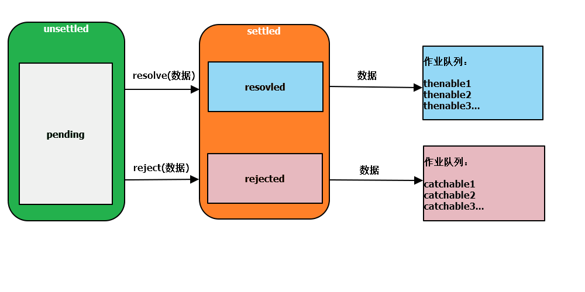
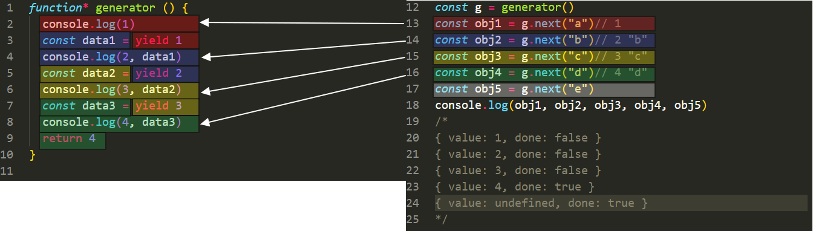

<!DOCTYPE html>
<html lang="en">

<head>
  <meta charset="utf-8" />
    
  <meta name="viewport" content="width=device-width, initial-scale=1, maximum-scale=1" />
  <title>
    ES6 --- 进阶篇 |  “鼠”于Huafu的“2”！
  </title>
  
  <link rel="shortcut icon" href="http://localhost:4000/blog/favicon.ico" />
  
  <link rel="stylesheet" href="/blog/css/style.css">
  <script src="/blog/js/pace.min.js"></script>

  

  

<link rel="alternate" href="/blog/atom.xml" title="“鼠”于Huafu的“2”！" type="application/atom+xml">
</head>

</html>

<body>
  <div id="app">
    <main class="content">
      <section class="outer">
  <article id="post-ES6b" class="article article-type-post" itemscope
  itemprop="blogPost" data-scroll-reveal>

  <div class="article-inner">
    
    <header class="article-header">
       
<h1 class="article-title sea-center" style="border-left:0" itemprop="name">
  ES6 --- 进阶篇
</h1>
  

    </header>
    

    
    <div class="article-meta">
      <a href="/blog/2020/11/09/ES6b/" class="article-date">
  <time datetime="2020-11-09T08:16:34.000Z" itemprop="datePublished">2020-11-09</time>
</a>
      
    </div>
    

    
    
    <div class="tocbot"></div>


    

    <div class="article-entry" itemprop="articleBody">
      


      

      
      <h2 id="一-变量"><a href="#一-变量" class="headerlink" title="(一) 变量"></a>(一) 变量</h2><h3 id="1-var"><a href="#1-var" class="headerlink" title="1.var"></a>1.var</h3><ul>
<li>变量重复声明: 会导致数据被覆盖</li>
<li>变量声明提升: 数据访问错乱, 闭包问题</li>
<li>全局变量挂在: 挂在在全局对象上,会导致全局对象的属性污染 </li>
</ul>
<h3 id="2-let"><a href="#2-let" class="headerlink" title="2.let"></a>2.let</h3><ul>
<li>块级作用域: 声明的变量具有识别绑定块级作用域的能力, 只在对应的作用域内有效</li>
<li>暂时性死区: 变量声明提升后会放进暂时性死区, 在代码运行到声明语句的时候才会移除, 暂时性死区的内容不可访问</li>
<li>全局声明的变量不会挂在全局对象</li>
<li>变量在同一作用域内不允许重复声明</li>
</ul>
<h3 id="3-const"><a href="#3-const" class="headerlink" title="3.const"></a>3.const</h3><ul>
<li>具有和let一样的特点</li>
<li>变量声明时必须初始化</li>
<li>声明的变量内存空间不允许改变</li>
<li>固定的常量命名: 全部大写, _线分隔</li>
</ul>
<hr>
<h2 id="二-字符串与正则"><a href="#二-字符串与正则" class="headerlink" title="(二) 字符串与正则"></a>(二) 字符串与正则</h2><h3 id="1-Unicode-编码"><a href="#1-Unicode-编码" class="headerlink" title="1.Unicode 编码"></a>1.Unicode 编码</h3><h4 id="1-码元"><a href="#1-码元" class="headerlink" title="(1) 码元"></a>(1) 码元</h4><ul>
<li>在早期, 由于内存空间的宝贵, Unicode 使用16位二进制来存储文字</li>
<li>一个16位的二进制编码为一个码元</li>
<li>String.charCodeAt(index)</li>
</ul>
<h4 id="2-码点"><a href="#2-码点" class="headerlink" title="(2) 码点"></a>(2) 码点</h4><ul>
<li>在后来, 技术的进步, Unicode 对文字进行了拓展, 将某些文字拓展到了32位</li>
<li>一个32位的二进制编码占用两个码元, 这些文字对应的二进制数叫做码点</li>
<li>String.charPonitAt(index)</li>
</ul>
<h3 id="2-字符串新增实例方法"><a href="#2-字符串新增实例方法" class="headerlink" title="2.字符串新增实例方法"></a>2.字符串新增实例方法</h3><ul>
<li>str.includes(str, [index]), 检测字符串是否包含指定字符(默认从头开始, 可指定开始位置)</li>
<li>str.startWith(str, [index]), 检测字符串是否以指定字符开始(默认从头开始, 可指定开始位置)</li>
<li>str.enWith(str, [index]), 检测字符串是否以指定字符结束(默认从头开始, 可指定开始位置)</li>
<li>str.repeat(num), 将字符串重复指定次数后返回</li>
</ul>
<h3 id="3-正则"><a href="#3-正则" class="headerlink" title="3.正则"></a>3.正则</h3><ul>
<li>i 不区分大小写</li>
<li>m 多行匹配</li>
<li>g 全局匹配</li>
<li>u 码点匹配(正则使用码点进行匹配)</li>
<li>y 粘连标记(正则匹配受lastIndex影响)</li>
</ul>
<h3 id="4-模板字符串"><a href="#4-模板字符串" class="headerlink" title="4.模板字符串"></a>4.模板字符串</h3><ul>
<li>模板字符串符号 <strong>`string`</strong></li>
<li>自然书写多行</li>
<li>利用 <strong>${}</strong> 进行表达式插入</li>
<li><strong>标记</strong> <ul>
<li>函数名标记: 调用函数, 模板字符串分隔作为参数传递</li>
<li>String.raw标记: 纯文本(不识别转义符)<figure class="highlight js"><table><tr><td class="gutter"><pre><span class="line">1</span></pre></td><td class="code"><pre><span class="line"><span class="keyword">let</span> param1 = <span class="string">"a"</span></span></pre></td></tr><tr><td class="gutter"><pre><span class="line">2</span></pre></td><td class="code"><pre><span class="line"><span class="keyword">let</span> param2 = <span class="string">"z"</span></span></pre></td></tr><tr><td class="gutter"><pre><span class="line">3</span></pre></td><td class="code"><pre><span class="line"></span></pre></td></tr><tr><td class="gutter"><pre><span class="line">4</span></pre></td><td class="code"><pre><span class="line"><span class="keyword">let</span> text = myTag<span class="string">`英文字母表的第一个字母是<span class="subst">$&#123;param1&#125;</span>, 最后一个字母是<span class="subst">$&#123;param2&#125;</span>`</span></span></pre></td></tr><tr><td class="gutter"><pre><span class="line">5</span></pre></td><td class="code"><pre><span class="line"></span></pre></td></tr><tr><td class="gutter"><pre><span class="line">6</span></pre></td><td class="code"><pre><span class="line"><span class="function"><span class="keyword">function</span> <span class="title">myTag</span>(<span class="params">template, paramOne, paramTwo</span>)</span>&#123;</span></pre></td></tr><tr><td class="gutter"><pre><span class="line">7</span></pre></td><td class="code"><pre><span class="line">  <span class="built_in">console</span>.log(template)<span class="comment">// ['英文字母表的第一个字母是', ', 最后一个字母是', '']</span></span></pre></td></tr><tr><td class="gutter"><pre><span class="line">8</span></pre></td><td class="code"><pre><span class="line">  <span class="built_in">console</span>.log(paramOne)<span class="comment">// a</span></span></pre></td></tr><tr><td class="gutter"><pre><span class="line">9</span></pre></td><td class="code"><pre><span class="line">  <span class="built_in">console</span>.log(paramTwo)<span class="comment">// z</span></span></pre></td></tr><tr><td class="gutter"><pre><span class="line">10</span></pre></td><td class="code"><pre><span class="line">&#125;</span></pre></td></tr></table></figure>
</li>
</ul>
</li>
</ul>
<hr>
<h2 id="三-函数与拓展运算符"><a href="#三-函数与拓展运算符" class="headerlink" title="(三) 函数与拓展运算符"></a>(三) 函数与拓展运算符</h2><h3 id="1-拓展运算符"><a href="#1-拓展运算符" class="headerlink" title="1.拓展运算符"></a>1.拓展运算符</h3><ul>
<li>拓展运算符 <strong>…</strong></li>
<li>展开数组: 剥离[]</li>
<li>展开对象: 剥离{}</li>
<li>收集参数: 剩余参数</li>
</ul>
<h3 id="2-参数默认值"><a href="#2-参数默认值" class="headerlink" title="2.参数默认值"></a>2.参数默认值</h3><ul>
<li>给行参赋值, 赋予的值就是默认值</li>
<li>只有该行参绝对等于undefined 的时候才会应用默认值</li>
<li>在使用默认值的情况下, 该函数会自动定义成严格模式, arguments和行参是脱离的</li>
<li>行参默认值也存在暂时性死区</li>
</ul>
<h3 id="3-剩余参数"><a href="#3-剩余参数" class="headerlink" title="3.剩余参数"></a>3.剩余参数</h3><ul>
<li>在行参位置使用拓展运算符将剩余实参收集于一个数组内</li>
<li>一个函数只能有一个剩余参数</li>
<li>剩余参数只能定义为最后一个行参</li>
</ul>
<h3 id="4-函数双重性"><a href="#4-函数双重性" class="headerlink" title="4.函数双重性"></a>4.函数双重性</h3><ul>
<li>普通函数: 处理程序</li>
<li>构造函数: 创建对象<ul>
<li>期望通过new调用</li>
<li>没有使用new调用, 会导致给this指定的对象(通常是window)添加错误的属性</li>
<li>原始使用this instanceof FunctionName 来判断是否通过new调用, 而是用call改变this执行则可以避开判断, 不严谨</li>
<li>ES6 在构造函数内可以通过new.target来判断是否是通过new 调用<ul>
<li>new 调用, new.target 指向该构造函数</li>
<li>非 new 调用, new.target 指向undefined</li>
</ul>
</li>
</ul>
</li>
</ul>
<h3 id="5-箭头函数"><a href="#5-箭头函数" class="headerlink" title="5.箭头函数"></a>5.箭头函数</h3><h4 id="1-this指向"><a href="#1-this指向" class="headerlink" title="(1) this指向"></a>(1) this指向</h4><ul>
<li>直接调用函数, this指向window</li>
<li>对象调用方法, this指向该对象</li>
<li>new调用函数, this指向新创建的对象实例</li>
<li>函数通过 apply call bind 调用, this指向绑定的目标</li>
<li>DOM触发事件函数, this指向事件源</li>
<li>箭头函数没有this, 箭头函数体内使用this<ul>
<li>this 指向与调用无关</li>
<li>this 指向该箭头函数定义时的this指向</li>
</ul>
</li>
<li>严格模式下, 未经绑定, this指向undefined</li>
<li>类的字段初始化器中, this指向该类实例对象</li>
</ul>
<h4 id="2-使用细节"><a href="#2-使用细节" class="headerlink" title="(2) 使用细节"></a>(2) 使用细节</h4><ul>
<li>箭头函数没有this, arguments</li>
<li>箭头函数没有prototype, new.target</li>
<li>方法不使用箭头函数</li>
</ul>
<hr>
<h2 id="四-对象"><a href="#四-对象" class="headerlink" title="(四) 对象"></a>(四) 对象</h2><h3 id="1-对象字面量"><a href="#1-对象字面量" class="headerlink" title="1.对象字面量"></a>1.对象字面量</h3><ul>
<li>属性速写: 属性值来源于变量, 属性名与变量名相同时, 可以省略属性值</li>
<li>方法速写: 属性名与函数名相同时, 可以省略属性名和function关键字及 : 号</li>
<li>计算属性名: [ 表达式 ]</li>
</ul>
<h3 id="2-Object新增静态方法"><a href="#2-Object新增静态方法" class="headerlink" title="2.Object新增静态方法"></a>2.Object新增静态方法</h3><ul>
<li><p>Object.is(a, b) </p>
<ul>
<li>相当于严格相等</li>
<li>NaN和NaN是相等</li>
<li>+0和-0是不相等</li>
</ul>
</li>
<li><p>Object.assign(obj1, obj2)</p>
<ul>
<li>对象混合</li>
<li>将obj2混合入obj1, 同名覆盖, 返回obj1</li>
</ul>
</li>
<li><p>Object.getOwnPropertyName(obj)</p>
<ul>
<li>返回自身的所有属性的属性名(不包括原型链上的属性)</li>
<li>ES6规定了所返回数组的排序方式<ul>
<li>先排数字(升序)</li>
<li>再排字母(书写顺序)</li>
</ul>
</li>
</ul>
</li>
<li><p>Object.setPrototypeOf(obj, prototype)</p>
<ul>
<li>设置对象隐式原型</li>
</ul>
</li>
</ul>
<h3 id="3-面向对象（类）"><a href="#3-面向对象（类）" class="headerlink" title="3.面向对象（类）"></a>3.面向对象（类）</h3><h4 id="1-构造函数"><a href="#1-构造函数" class="headerlink" title="(1) 构造函数"></a>(1) 构造函数</h4><ul>
<li>属性和原型成员定义相分离, 可读性低</li>
<li>原型成员可以被枚举</li>
<li>默认可以当作普通函数调用</li>
</ul>
<h4 id="2-类的特点"><a href="#2-类的特点" class="headerlink" title="(2) 类的特点"></a>(2) 类的特点</h4><ul>
<li>属性和原型成员定义统一在一起, 可读性高</li>
<li>类的方法不可以枚举</li>
<li>必须使用new关键字调用</li>
<li>类中的代码均在严格模式下运行</li>
<li>类声明不会提升, 也有暂时性死区</li>
</ul>
<h4 id="3-语法"><a href="#3-语法" class="headerlink" title="(3) 语法"></a>(3) 语法</h4><figure class="highlight js"><table><tr><td class="gutter"><pre><span class="line">1</span></pre></td><td class="code"><pre><span class="line"><span class="class"><span class="keyword">class</span> <span class="title">Animal</span> </span>&#123;</span></pre></td></tr><tr><td class="gutter"><pre><span class="line">2</span></pre></td><td class="code"><pre><span class="line">  <span class="keyword">constructor</span>(name, age) &#123;</span></pre></td></tr><tr><td class="gutter"><pre><span class="line">3</span></pre></td><td class="code"><pre><span class="line">    <span class="comment">// 实例成员</span></span></pre></td></tr><tr><td class="gutter"><pre><span class="line">4</span></pre></td><td class="code"><pre><span class="line">    <span class="keyword">this</span>.name = name</span></pre></td></tr><tr><td class="gutter"><pre><span class="line">5</span></pre></td><td class="code"><pre><span class="line">    <span class="keyword">this</span>.age = age</span></pre></td></tr><tr><td class="gutter"><pre><span class="line">6</span></pre></td><td class="code"><pre><span class="line">  &#125;</span></pre></td></tr><tr><td class="gutter"><pre><span class="line">7</span></pre></td><td class="code"><pre><span class="line">  <span class="comment">//访问器，实例成员</span></span></pre></td></tr><tr><td class="gutter"><pre><span class="line">8</span></pre></td><td class="code"><pre><span class="line">  <span class="keyword">get</span> age() &#123;</span></pre></td></tr><tr><td class="gutter"><pre><span class="line">9</span></pre></td><td class="code"><pre><span class="line">    <span class="keyword">return</span> <span class="keyword">this</span>._age + <span class="string">"岁"</span></span></pre></td></tr><tr><td class="gutter"><pre><span class="line">10</span></pre></td><td class="code"><pre><span class="line">  &#125;</span></pre></td></tr><tr><td class="gutter"><pre><span class="line">11</span></pre></td><td class="code"><pre><span class="line">  <span class="keyword">set</span> age(age) &#123;</span></pre></td></tr><tr><td class="gutter"><pre><span class="line">12</span></pre></td><td class="code"><pre><span class="line">    <span class="keyword">if</span> (age &lt; <span class="number">0</span>) &#123;</span></pre></td></tr><tr><td class="gutter"><pre><span class="line">13</span></pre></td><td class="code"><pre><span class="line">      age = <span class="number">0</span></span></pre></td></tr><tr><td class="gutter"><pre><span class="line">14</span></pre></td><td class="code"><pre><span class="line">    &#125;</span></pre></td></tr><tr><td class="gutter"><pre><span class="line">15</span></pre></td><td class="code"><pre><span class="line">    <span class="keyword">if</span> (age &gt; <span class="number">100</span>) &#123;</span></pre></td></tr><tr><td class="gutter"><pre><span class="line">16</span></pre></td><td class="code"><pre><span class="line">      age = <span class="number">100</span></span></pre></td></tr><tr><td class="gutter"><pre><span class="line">17</span></pre></td><td class="code"><pre><span class="line">    &#125;</span></pre></td></tr><tr><td class="gutter"><pre><span class="line">18</span></pre></td><td class="code"><pre><span class="line">    <span class="keyword">this</span>._age = <span class="number">100</span></span></pre></td></tr><tr><td class="gutter"><pre><span class="line">19</span></pre></td><td class="code"><pre><span class="line">  &#125;</span></pre></td></tr><tr><td class="gutter"><pre><span class="line">20</span></pre></td><td class="code"><pre><span class="line"></span></pre></td></tr><tr><td class="gutter"><pre><span class="line">21</span></pre></td><td class="code"><pre><span class="line">  <span class="comment">//字段初始化器, 实例成员</span></span></pre></td></tr><tr><td class="gutter"><pre><span class="line">22</span></pre></td><td class="code"><pre><span class="line">  eat = <span class="string">'food'</span></span></pre></td></tr><tr><td class="gutter"><pre><span class="line">23</span></pre></td><td class="code"><pre><span class="line"></span></pre></td></tr><tr><td class="gutter"><pre><span class="line">24</span></pre></td><td class="code"><pre><span class="line">  <span class="comment">//静态成员</span></span></pre></td></tr><tr><td class="gutter"><pre><span class="line">25</span></pre></td><td class="code"><pre><span class="line">  <span class="keyword">static</span> type = <span class="string">"animal"</span></span></pre></td></tr><tr><td class="gutter"><pre><span class="line">26</span></pre></td><td class="code"><pre><span class="line">  <span class="keyword">static</span> method() &#123;</span></pre></td></tr><tr><td class="gutter"><pre><span class="line">27</span></pre></td><td class="code"><pre><span class="line">    <span class="built_in">console</span>.log(<span class="string">"animal"</span>)</span></pre></td></tr><tr><td class="gutter"><pre><span class="line">28</span></pre></td><td class="code"><pre><span class="line">  &#125;</span></pre></td></tr><tr><td class="gutter"><pre><span class="line">29</span></pre></td><td class="code"><pre><span class="line"></span></pre></td></tr><tr><td class="gutter"><pre><span class="line">30</span></pre></td><td class="code"><pre><span class="line">  <span class="comment">//原型方法</span></span></pre></td></tr><tr><td class="gutter"><pre><span class="line">31</span></pre></td><td class="code"><pre><span class="line">  callName()&#123;</span></pre></td></tr><tr><td class="gutter"><pre><span class="line">32</span></pre></td><td class="code"><pre><span class="line">    <span class="built_in">console</span>.log(<span class="keyword">this</span>.name)</span></pre></td></tr><tr><td class="gutter"><pre><span class="line">33</span></pre></td><td class="code"><pre><span class="line">  &#125;</span></pre></td></tr><tr><td class="gutter"><pre><span class="line">34</span></pre></td><td class="code"><pre><span class="line">&#125;</span></pre></td></tr><tr><td class="gutter"><pre><span class="line">35</span></pre></td><td class="code"><pre><span class="line"><span class="keyword">var</span> a = <span class="keyword">new</span> Animal(<span class="string">"dog"</span>, <span class="number">50</span>)</span></pre></td></tr><tr><td class="gutter"><pre><span class="line">36</span></pre></td><td class="code"><pre><span class="line"><span class="built_in">console</span>.log(a)</span></pre></td></tr><tr><td class="gutter"><pre><span class="line">37</span></pre></td><td class="code"><pre><span class="line"><span class="built_in">console</span>.dir(Animal)</span></pre></td></tr></table></figure>
<ul>
<li>实例成员<ul>
<li>定义在constructor函数内部</li>
<li>使用字段初始化器直接定义在constructor函数外部的属性</li>
<li>使用访问器（get, set）定义在constructor函数外部的成员</li>
</ul>
</li>
<li>原型成员<ul>
<li>直接定义在constructor函数外部的方法</li>
</ul>
</li>
<li>静态成员<ul>
<li>使用static关键字修饰的成员</li>
</ul>
</li>
</ul>
<h4 id="（4）装饰器"><a href="#（4）装饰器" class="headerlink" title="（4）装饰器"></a>（4）装饰器</h4><h4 id="（5）继承"><a href="#（5）继承" class="headerlink" title="（5）继承"></a>（5）继承</h4><ul>
<li>extends 继承</li>
<li>super 父类</li>
</ul>
<hr>
<h2 id="五-解构"><a href="#五-解构" class="headerlink" title="(五) 解构"></a>(五) 解构</h2><h3 id="1-对象结构"><a href="#1-对象结构" class="headerlink" title="1.对象结构"></a>1.对象结构</h3><ul>
<li>同名解构</li>
<li>异名解构</li>
<li>解构默认值</li>
<li>解构失败</li>
<li>嵌套深度解构<figure class="highlight js"><table><tr><td class="gutter"><pre><span class="line">1</span></pre></td><td class="code"><pre><span class="line"><span class="keyword">const</span> obj = &#123;</span></pre></td></tr><tr><td class="gutter"><pre><span class="line">2</span></pre></td><td class="code"><pre><span class="line">  name: <span class="string">"abc"</span>,</span></pre></td></tr><tr><td class="gutter"><pre><span class="line">3</span></pre></td><td class="code"><pre><span class="line">  age: <span class="number">123</span>,</span></pre></td></tr><tr><td class="gutter"><pre><span class="line">4</span></pre></td><td class="code"><pre><span class="line">  sex: <span class="string">"男"</span>,</span></pre></td></tr><tr><td class="gutter"><pre><span class="line">5</span></pre></td><td class="code"><pre><span class="line">  address: &#123;</span></pre></td></tr><tr><td class="gutter"><pre><span class="line">6</span></pre></td><td class="code"><pre><span class="line">    province：<span class="string">"云南"</span>,</span></pre></td></tr><tr><td class="gutter"><pre><span class="line">7</span></pre></td><td class="code"><pre><span class="line">    city: <span class="string">"昆明"</span></span></pre></td></tr><tr><td class="gutter"><pre><span class="line">8</span></pre></td><td class="code"><pre><span class="line">  &#125;</span></pre></td></tr><tr><td class="gutter"><pre><span class="line">9</span></pre></td><td class="code"><pre><span class="line">&#125;</span></pre></td></tr><tr><td class="gutter"><pre><span class="line">10</span></pre></td><td class="code"><pre><span class="line"></span></pre></td></tr><tr><td class="gutter"><pre><span class="line">11</span></pre></td><td class="code"><pre><span class="line"><span class="keyword">let</span> &#123;name, age, <span class="attr">sex</span>:genner, <span class="attr">address</span>: &#123;province, city&#125;, time = <span class="number">20200404</span>, user&#125; = obj</span></pre></td></tr></table></figure>

</li>
</ul>
<h3 id="2-数组解构"><a href="#2-数组解构" class="headerlink" title="2.数组解构"></a>2.数组解构</h3><ul>
<li>位置解构</li>
<li>指定位置解构</li>
<li>解构默认值</li>
<li>解构失败</li>
<li>嵌套深度解构</li>
<li>剩余结构<figure class="highlight js"><table><tr><td class="gutter"><pre><span class="line">1</span></pre></td><td class="code"><pre><span class="line"><span class="keyword">const</span> arr = [<span class="number">0</span>, <span class="number">1</span>, <span class="number">2</span>, [<span class="string">"a"</span>], <span class="number">3</span>]</span></pre></td></tr><tr><td class="gutter"><pre><span class="line">2</span></pre></td><td class="code"><pre><span class="line"></span></pre></td></tr><tr><td class="gutter"><pre><span class="line">3</span></pre></td><td class="code"><pre><span class="line"><span class="keyword">let</span> [ , , two, [A, B = <span class="string">"b"</span>, C], ...num] = obj</span></pre></td></tr></table></figure>

</li>
</ul>
<h3 id="3-参数解构"><a href="#3-参数解构" class="headerlink" title="3.参数解构"></a>3.参数解构</h3><figure class="highlight js"><table><tr><td class="gutter"><pre><span class="line">1</span></pre></td><td class="code"><pre><span class="line"><span class="function"><span class="keyword">function</span> <span class="title">ajax</span>(<span class="params">&#123;method = <span class="string">"GET"</span>, url = <span class="string">"/"</span>&#125; = &#123;&#125;</span>)</span>&#123;</span></pre></td></tr><tr><td class="gutter"><pre><span class="line">2</span></pre></td><td class="code"><pre><span class="line">  <span class="built_in">console</span>.log(method, url)</span></pre></td></tr><tr><td class="gutter"><pre><span class="line">3</span></pre></td><td class="code"><pre><span class="line">&#125;</span></pre></td></tr><tr><td class="gutter"><pre><span class="line">4</span></pre></td><td class="code"><pre><span class="line"></span></pre></td></tr><tr><td class="gutter"><pre><span class="line">5</span></pre></td><td class="code"><pre><span class="line">ajax()</span></pre></td></tr></table></figure>
<hr>
<h2 id="六-符号"><a href="#六-符号" class="headerlink" title="(六) 符号"></a>(六) 符号</h2><h3 id="1-普通符号Symbol"><a href="#1-普通符号Symbol" class="headerlink" title="1.普通符号Symbol"></a>1.普通符号Symbol</h3><ul>
<li>通过调用Symbol函数创建一个Symbol, 没有字面量形式, 参数是符号描述</li>
<li>每次调用Symbol函数创建创建的Symbol都不一样</li>
<li>通过typeof 得到的类型是symbol</li>
<li>无法进行隐式类型转换</li>
<li>可以进行显式类型转换 String(Symbol)</li>
</ul>
<h3 id="2-私有属性"><a href="#2-私有属性" class="headerlink" title="2.私有属性"></a>2.私有属性</h3><ul>
<li>符号是ES6新增的数据类型， 用于给对象设置私有属性</li>
<li>符号可以作为对象的属性存在，称之为符号属性</li>
<li>通过立即执行函数私有变量，来设计私有属性</li>
<li>符号属性不能枚举<ul>
<li>for-in遍历，不能读取符号属性</li>
<li>Object.getOwnPropertyNames()获取所有不可枚举的属性，不能读取符号属性</li>
<li>Object.keys()获取所有可枚举的属性，不能读取符号属性</li>
<li>Object.getOwnPropertySymbols()获取所有的符号属性，能读取符号属性</li>
</ul>
</li>
</ul>
<h3 id="3-共享符号Symbol-for"><a href="#3-共享符号Symbol-for" class="headerlink" title="3.共享符号Symbol.for"></a>3.共享符号Symbol.for</h3><ul>
<li>通过调用Symbol函数的静态方法for创建一个Symbol, 没有字面量形式, 参数是符号描述</li>
<li>只要符号描述相同，创建的Symbol始终相同（不传递参数创建的Symbol永远一样）</li>
</ul>
<h3 id="4-知名符号"><a href="#4-知名符号" class="headerlink" title="4.知名符号"></a>4.知名符号</h3><ul>
<li>知名符号是一些特殊含义的共享符号， 通过Symbol的静态属性得到</li>
<li>Symbol.hasInstance 影响instanceof</li>
<li>Symbol.isConcatSpreadable 影响数组concat方法</li>
<li>Symbol.toPrimitive 影响类型转换</li>
<li>Symbol.toStringTag 影响Object.prototype.toString的返回值</li>
</ul>
<hr>
<h2 id="七-异步"><a href="#七-异步" class="headerlink" title="(七) 异步"></a>(七) 异步</h2><h3 id="1-事件循环"><a href="#1-事件循环" class="headerlink" title="1.事件循环"></a>1.事件循环</h3>

<h3 id="2-回调地域"><a href="#2-回调地域" class="headerlink" title="2.回调地域"></a>2.回调地域</h3><h3 id="3-Promise"><a href="#3-Promise" class="headerlink" title="3.Promise"></a>3.Promise</h3><h4 id="（1）模式"><a href="#（1）模式" class="headerlink" title="（1）模式"></a>（1）模式</h4>

<h4 id="（2）并联"><a href="#（2）并联" class="headerlink" title="（2）并联"></a>（2）并联</h4><figure class="highlight js"><table><tr><td class="gutter"><pre><span class="line">1</span></pre></td><td class="code"><pre><span class="line"><span class="keyword">const</span> pro = <span class="keyword">new</span> <span class="built_in">Promise</span>(<span class="function">(<span class="params">resolve, reject</span>) =&gt;</span> &#123;</span></pre></td></tr><tr><td class="gutter"><pre><span class="line">2</span></pre></td><td class="code"><pre><span class="line">  <span class="comment">//未决阶段,状态pending</span></span></pre></td></tr><tr><td class="gutter"><pre><span class="line">3</span></pre></td><td class="code"><pre><span class="line">  <span class="comment">//通过调用resolve将状态推向已决阶段的resolved</span></span></pre></td></tr><tr><td class="gutter"><pre><span class="line">4</span></pre></td><td class="code"><pre><span class="line">  <span class="comment">//通过调用reject将状态推向已决阶段的rejected</span></span></pre></td></tr><tr><td class="gutter"><pre><span class="line">5</span></pre></td><td class="code"><pre><span class="line">  <span class="comment">//发生错误，则将状态推向已决阶段的rejected</span></span></pre></td></tr><tr><td class="gutter"><pre><span class="line">6</span></pre></td><td class="code"><pre><span class="line">&#125;)</span></pre></td></tr><tr><td class="gutter"><pre><span class="line">7</span></pre></td><td class="code"><pre><span class="line"></span></pre></td></tr><tr><td class="gutter"><pre><span class="line">8</span></pre></td><td class="code"><pre><span class="line"><span class="comment">//已决阶段thenable</span></span></pre></td></tr><tr><td class="gutter"><pre><span class="line">9</span></pre></td><td class="code"><pre><span class="line"><span class="comment">//得到的是resolve传递的数据</span></span></pre></td></tr><tr><td class="gutter"><pre><span class="line">10</span></pre></td><td class="code"><pre><span class="line"><span class="comment">//可注册多个并联thenable</span></span></pre></td></tr><tr><td class="gutter"><pre><span class="line">11</span></pre></td><td class="code"><pre><span class="line">pro.then(<span class="function"><span class="params">data</span> =&gt;</span> &#123;</span></pre></td></tr><tr><td class="gutter"><pre><span class="line">12</span></pre></td><td class="code"><pre><span class="line">  <span class="built_in">console</span>.log(data)</span></pre></td></tr><tr><td class="gutter"><pre><span class="line">13</span></pre></td><td class="code"><pre><span class="line">&#125;)</span></pre></td></tr><tr><td class="gutter"><pre><span class="line">14</span></pre></td><td class="code"><pre><span class="line">pro.then(<span class="function"><span class="params">data</span> =&gt;</span> &#123;</span></pre></td></tr><tr><td class="gutter"><pre><span class="line">15</span></pre></td><td class="code"><pre><span class="line">  <span class="built_in">console</span>.log(data)</span></pre></td></tr><tr><td class="gutter"><pre><span class="line">16</span></pre></td><td class="code"><pre><span class="line">&#125;)</span></pre></td></tr><tr><td class="gutter"><pre><span class="line">17</span></pre></td><td class="code"><pre><span class="line">pro.then(<span class="function"><span class="params">data</span> =&gt;</span> &#123;</span></pre></td></tr><tr><td class="gutter"><pre><span class="line">18</span></pre></td><td class="code"><pre><span class="line">  <span class="built_in">console</span>.log(data)</span></pre></td></tr><tr><td class="gutter"><pre><span class="line">19</span></pre></td><td class="code"><pre><span class="line">&#125;)</span></pre></td></tr><tr><td class="gutter"><pre><span class="line">20</span></pre></td><td class="code"><pre><span class="line"></span></pre></td></tr><tr><td class="gutter"><pre><span class="line">21</span></pre></td><td class="code"><pre><span class="line"><span class="comment">//已决阶段catchable</span></span></pre></td></tr><tr><td class="gutter"><pre><span class="line">22</span></pre></td><td class="code"><pre><span class="line"><span class="comment">//得到的是reject传递的数据</span></span></pre></td></tr><tr><td class="gutter"><pre><span class="line">23</span></pre></td><td class="code"><pre><span class="line"><span class="comment">//可注册多个并联catchable</span></span></pre></td></tr><tr><td class="gutter"><pre><span class="line">24</span></pre></td><td class="code"><pre><span class="line">pro.catch(<span class="function"><span class="params">err</span> =&gt;</span> &#123;</span></pre></td></tr><tr><td class="gutter"><pre><span class="line">25</span></pre></td><td class="code"><pre><span class="line">  <span class="built_in">console</span>.log(err)</span></pre></td></tr><tr><td class="gutter"><pre><span class="line">26</span></pre></td><td class="code"><pre><span class="line">&#125;)</span></pre></td></tr><tr><td class="gutter"><pre><span class="line">27</span></pre></td><td class="code"><pre><span class="line">pro.catch(<span class="function"><span class="params">err</span> =&gt;</span> &#123;</span></pre></td></tr><tr><td class="gutter"><pre><span class="line">28</span></pre></td><td class="code"><pre><span class="line">  <span class="built_in">console</span>.log(err)</span></pre></td></tr><tr><td class="gutter"><pre><span class="line">29</span></pre></td><td class="code"><pre><span class="line">&#125;)</span></pre></td></tr><tr><td class="gutter"><pre><span class="line">30</span></pre></td><td class="code"><pre><span class="line">pro.catch(<span class="function"><span class="params">err</span> =&gt;</span> &#123;</span></pre></td></tr><tr><td class="gutter"><pre><span class="line">31</span></pre></td><td class="code"><pre><span class="line">  <span class="built_in">console</span>.log(err)</span></pre></td></tr><tr><td class="gutter"><pre><span class="line">32</span></pre></td><td class="code"><pre><span class="line">&#125;)</span></pre></td></tr></table></figure>
<ul>
<li><font color=red>Promise并没有消除回调，只是让回调变得可控</font></li>
<li>未决阶段的函数是同步的，会立即执行</li>
<li>已决阶段thenable函数是异步的，会加入微队列等待执行<ul>
<li>then方法用于添加并联thenable函数</li>
<li>then方法可以同时添加并联thenable、catchable函数</li>
</ul>
</li>
<li>已决阶段catchable函数是异步的，会加入微队列等待执行<ul>
<li>catch方法用于添加并联catchable函数</li>
</ul>
</li>
<li>在未决阶段发生未捕获的错误，会将状态推向rejected，并被catchable捕获</li>
</ul>
<h4 id="（3）串联"><a href="#（3）串联" class="headerlink" title="（3）串联"></a>（3）串联</h4><figure class="highlight js"><table><tr><td class="gutter"><pre><span class="line">1</span></pre></td><td class="code"><pre><span class="line"><span class="keyword">const</span> pro = <span class="keyword">new</span> <span class="built_in">Promise</span>(<span class="function">(<span class="params">resolve, reject</span>) =&gt;</span> &#123;</span></pre></td></tr><tr><td class="gutter"><pre><span class="line">2</span></pre></td><td class="code"><pre><span class="line">  <span class="comment">//未决阶段,状态pending</span></span></pre></td></tr><tr><td class="gutter"><pre><span class="line">3</span></pre></td><td class="code"><pre><span class="line">  <span class="comment">//通过调用resolve将状态推向已决阶段的resolved</span></span></pre></td></tr><tr><td class="gutter"><pre><span class="line">4</span></pre></td><td class="code"><pre><span class="line">  <span class="comment">//通过调用reject将状态推向已决阶段的rejected</span></span></pre></td></tr><tr><td class="gutter"><pre><span class="line">5</span></pre></td><td class="code"><pre><span class="line">  <span class="comment">//发生错误，则将状态推向已决阶段的rejected</span></span></pre></td></tr><tr><td class="gutter"><pre><span class="line">6</span></pre></td><td class="code"><pre><span class="line">&#125;)</span></pre></td></tr><tr><td class="gutter"><pre><span class="line">7</span></pre></td><td class="code"><pre><span class="line"></span></pre></td></tr><tr><td class="gutter"><pre><span class="line">8</span></pre></td><td class="code"><pre><span class="line"><span class="comment">//已决阶段thenable、catchable</span></span></pre></td></tr><tr><td class="gutter"><pre><span class="line">9</span></pre></td><td class="code"><pre><span class="line"><span class="comment">//pro1是一个promise,状态为pending</span></span></pre></td></tr><tr><td class="gutter"><pre><span class="line">10</span></pre></td><td class="code"><pre><span class="line"><span class="keyword">const</span> pro1 = pro.then(<span class="function"><span class="params">data</span> =&gt;</span> &#123;</span></pre></td></tr><tr><td class="gutter"><pre><span class="line">11</span></pre></td><td class="code"><pre><span class="line">  <span class="built_in">console</span>.log(data)</span></pre></td></tr><tr><td class="gutter"><pre><span class="line">12</span></pre></td><td class="code"><pre><span class="line">  <span class="keyword">return</span> data</span></pre></td></tr><tr><td class="gutter"><pre><span class="line">13</span></pre></td><td class="code"><pre><span class="line">  <span class="comment">//正常处理后，将状态推向已决阶段的resolved</span></span></pre></td></tr><tr><td class="gutter"><pre><span class="line">14</span></pre></td><td class="code"><pre><span class="line">  <span class="comment">//发生错误，则将状态推向已决阶段的rejected</span></span></pre></td></tr><tr><td class="gutter"><pre><span class="line">15</span></pre></td><td class="code"><pre><span class="line">&#125;, err =&gt; &#123;</span></pre></td></tr><tr><td class="gutter"><pre><span class="line">16</span></pre></td><td class="code"><pre><span class="line">  <span class="built_in">console</span>.log(err)</span></pre></td></tr><tr><td class="gutter"><pre><span class="line">17</span></pre></td><td class="code"><pre><span class="line">  <span class="keyword">return</span> err</span></pre></td></tr><tr><td class="gutter"><pre><span class="line">18</span></pre></td><td class="code"><pre><span class="line">  <span class="comment">//正常处理后，将状态推向已决阶段的resolved</span></span></pre></td></tr><tr><td class="gutter"><pre><span class="line">19</span></pre></td><td class="code"><pre><span class="line">  <span class="comment">//发生错误，则将状态推向已决阶段的rejected</span></span></pre></td></tr><tr><td class="gutter"><pre><span class="line">20</span></pre></td><td class="code"><pre><span class="line">&#125;)</span></pre></td></tr><tr><td class="gutter"><pre><span class="line">21</span></pre></td><td class="code"><pre><span class="line"></span></pre></td></tr><tr><td class="gutter"><pre><span class="line">22</span></pre></td><td class="code"><pre><span class="line"><span class="comment">//默认返回一个promise</span></span></pre></td></tr><tr><td class="gutter"><pre><span class="line">23</span></pre></td><td class="code"><pre><span class="line"><span class="comment">//携带的数据是上一次的thenable、catchable返回值</span></span></pre></td></tr><tr><td class="gutter"><pre><span class="line">24</span></pre></td><td class="code"><pre><span class="line">pro1.then(<span class="function"><span class="params">data</span> =&gt;</span> &#123;</span></pre></td></tr><tr><td class="gutter"><pre><span class="line">25</span></pre></td><td class="code"><pre><span class="line">  <span class="built_in">console</span>.log(data)</span></pre></td></tr><tr><td class="gutter"><pre><span class="line">26</span></pre></td><td class="code"><pre><span class="line">&#125;, err =&gt; &#123;</span></pre></td></tr><tr><td class="gutter"><pre><span class="line">27</span></pre></td><td class="code"><pre><span class="line">  <span class="built_in">console</span>.log(err)</span></pre></td></tr><tr><td class="gutter"><pre><span class="line">28</span></pre></td><td class="code"><pre><span class="line">&#125;)</span></pre></td></tr></table></figure>
<ul>
<li>then、catch方法每次调用返回一个全新Promise<ul>
<li>初始的状态为pending</li>
<li>当thenable、catchable处理完毕后，对应改变状态<ul>
<li>正常处理后，将状态推向已决阶段的resolved</li>
<li>发生错误，则将状态推向已决阶段的rejected </li>
<li>返回值即为携带的数据</li>
</ul>
</li>
</ul>
</li>
</ul>
<h4 id="（4）静态成员"><a href="#（4）静态成员" class="headerlink" title="（4）静态成员"></a>（4）静态成员</h4><ul>
<li><strong>Promise.resolve(data)</strong><ul>
<li>得到一个resolved状态的Promise</li>
<li>携带的数据为传递的data数据</li>
<li>如果传递的data数据是一个Promise<ul>
<li>则得到的是传递的Promise</li>
<li>携带的数据是传递的Promise携带的数据</li>
</ul>
</li>
</ul>
</li>
<li><strong>Promise.reject(data)</strong> <ul>
<li>得到一个rejected状态的Promise</li>
<li>数据为传递的data</li>
</ul>
</li>
<li><strong>Promise.all(proms)</strong> <ul>
<li>传递一个Promise数组，得到一个全新的Promise<ul>
<li>初始状态为pending</li>
<li>全部的Promise都为resolved<ul>
<li>状态为resolved</li>
<li>携带的数据为一个数组，依次包含所有的Promise携带的数据</li>
</ul>
</li>
<li>有一个Promise为rejected<ul>
<li>状态为rejected</li>
<li>携带的数据为第一个rejected状态的Promise携带的数据</li>
</ul>
</li>
</ul>
</li>
</ul>
</li>
<li><strong>Promise.race(proms)</strong> <ul>
<li>传递一个Promise数组，得到一个全新的Promise</li>
<li>有一个Promise为resolved<ul>
<li>状态为resolved</li>
<li>携带的数据为第一个resolved状态的Promise携带的数据</li>
</ul>
</li>
<li>有一个Promise为rejected<ul>
<li>状态为rejected</li>
<li>携带的数据为第一个rejected状态的Promise携带的数据</li>
</ul>
</li>
</ul>
</li>
</ul>
<h4 id="（5）模拟源码"><a href="#（5）模拟源码" class="headerlink" title="（5）模拟源码"></a>（5）模拟源码</h4><hr>
<h3 id="4-async-await"><a href="#4-async-await" class="headerlink" title="4.async/await"></a>4.async/await</h3><ul>
<li>async用于修饰一个函数<ul>
<li>修饰函数即为异步函数</li>
<li>修饰函数一定隐式返回一个Promise</li>
<li>修饰函数中的return返回值即为Promise的resolved状态携带的数据</li>
<li>修饰函数中的throw抛出值即为Promise的rejected状态携带的数据</li>
</ul>
</li>
<li>await用于等待一个Promise<ul>
<li>只能在async修饰的函数体中使用</li>
<li>当等待的Promise完成时，返回携带的数据，当等待的Promise未完成时，函数体不会继续执行</li>
<li>当await在循环中使用时，循环会跟着等待，当等待的Promise未完成时，不会进入下一次循环</li>
<li>当await等待的不是一个Promise时，会使用Promise.resolve()进行包装成一个PromisePromise</li>
</ul>
</li>
</ul>
<hr>
<h3 id="5-Fetch"><a href="#5-Fetch" class="headerlink" title="5.Fetch"></a>5.Fetch</h3><h4 id="（1）特点"><a href="#（1）特点" class="headerlink" title="（1）特点"></a>（1）特点</h4><ul>
<li>并非取代AJAX, 而是对AJAX传统api的改进<ul>
<li>传统XMLHttpRequest所有功能集中在一个对象上，不利于代码维护</li>
<li>采用传统时间驱动模式，无法适配新的Promise api</li>
</ul>
</li>
<li>精细的分隔，跟利于处理复杂的AJAX场景</li>
<li>Fetch属于html5新增 web api</li>
</ul>
<h4 id="（2）基本使用"><a href="#（2）基本使用" class="headerlink" title="（2）基本使用"></a>（2）基本使用</h4><figure class="highlight js"><table><tr><td class="gutter"><pre><span class="line">1</span></pre></td><td class="code"><pre><span class="line"><span class="keyword">let</span> url = <span class="string">'www.data.com'</span></span></pre></td></tr><tr><td class="gutter"><pre><span class="line">2</span></pre></td><td class="code"><pre><span class="line"><span class="keyword">let</span> config = &#123;</span></pre></td></tr><tr><td class="gutter"><pre><span class="line">3</span></pre></td><td class="code"><pre><span class="line">  method: <span class="comment">//请求方式</span></span></pre></td></tr><tr><td class="gutter"><pre><span class="line">4</span></pre></td><td class="code"><pre><span class="line">  headers:<span class="comment">//请求头</span></span></pre></td></tr><tr><td class="gutter"><pre><span class="line">5</span></pre></td><td class="code"><pre><span class="line">  body: <span class="comment">//请求体</span></span></pre></td></tr><tr><td class="gutter"><pre><span class="line">6</span></pre></td><td class="code"><pre><span class="line">&#125;</span></pre></td></tr><tr><td class="gutter"><pre><span class="line">7</span></pre></td><td class="code"><pre><span class="line">fetch(url, config)</span></pre></td></tr></table></figure>
<ul>
<li>传递url和config配置<ul>
<li><font color=red>本质内部使用url和config创建一个Request对象</font></li>
<li><font color=red>也可直接传递一个Request对象</font></li>
</ul>
</li>
<li>返回一个Promise对象<ul>
<li>只要服务器有响应就一定是resolved状态</li>
<li>如果网络错误，没有到达服务器是rejected状态</li>
<li>携带的数据是服务器响应的内容</li>
</ul>
</li>
</ul>
<h4 id="（3）Response对象"><a href="#（3）Response对象" class="headerlink" title="（3）Response对象"></a>（3）Response对象</h4><figure class="highlight js"><table><tr><td class="gutter"><pre><span class="line">1</span></pre></td><td class="code"><pre><span class="line"><span class="keyword">async</span> <span class="function"><span class="keyword">function</span> <span class="title">getDatas</span>(<span class="params"></span>)</span>&#123;</span></pre></td></tr><tr><td class="gutter"><pre><span class="line">2</span></pre></td><td class="code"><pre><span class="line">  <span class="keyword">let</span> url = <span class="string">'www.data.com'</span></span></pre></td></tr><tr><td class="gutter"><pre><span class="line">3</span></pre></td><td class="code"><pre><span class="line">  <span class="keyword">let</span> config = &#123;</span></pre></td></tr><tr><td class="gutter"><pre><span class="line">4</span></pre></td><td class="code"><pre><span class="line">    method: <span class="comment">//请求方式</span></span></pre></td></tr><tr><td class="gutter"><pre><span class="line">5</span></pre></td><td class="code"><pre><span class="line">    headers:<span class="comment">//请求头</span></span></pre></td></tr><tr><td class="gutter"><pre><span class="line">6</span></pre></td><td class="code"><pre><span class="line">    body: <span class="comment">//请求体</span></span></pre></td></tr><tr><td class="gutter"><pre><span class="line">7</span></pre></td><td class="code"><pre><span class="line">  &#125;</span></pre></td></tr><tr><td class="gutter"><pre><span class="line">8</span></pre></td><td class="code"><pre><span class="line">  <span class="keyword">const</span> response = <span class="keyword">await</span> fetch(url, config)</span></pre></td></tr><tr><td class="gutter"><pre><span class="line">9</span></pre></td><td class="code"><pre><span class="line">  <span class="built_in">console</span>.log(response)</span></pre></td></tr><tr><td class="gutter"><pre><span class="line">10</span></pre></td><td class="code"><pre><span class="line">&#125;</span></pre></td></tr></table></figure>
<ul>
<li>Response对象成员：<ul>
<li>ok: boolean, 消息码200-299是true, 否则是false</li>
<li>status: number, 状态码</li>
<li>text() 处理文本格式</li>
<li>blob() 处理二进制格式</li>
<li>json() 处理json格式</li>
<li>redirect() 重定向</li>
</ul>
</li>
<li>测试可模拟一个Response对象<ul>
<li>通过new Response构造函数可创建一个Response对象<ul>
<li>参数1：string, 模拟的数据，json格式的字符串</li>
<li>参数2：object, Response对象成员</li>
</ul>
</li>
</ul>
</li>
</ul>
<h4 id="（4）Request对象"><a href="#（4）Request对象" class="headerlink" title="（4）Request对象"></a>（4）Request对象</h4><ul>
<li>fetch可以直接传递一个Request对象</li>
<li>通过new Request构造函数创建一个Request对象<ul>
<li>传递url和config</li>
<li>得到一个request对象</li>
</ul>
</li>
<li>每一次请求使用的Request对象应保证唯一（新建，勿重复使用）<ul>
<li>通过Request对象的clone()方法复制一个request对象</li>
</ul>
</li>
</ul>
<h4 id="（5）Headers对象"><a href="#（5）Headers对象" class="headerlink" title="（5）Headers对象"></a>（5）Headers对象</h4><ul>
<li>用于配置fetch的config配置中的headers</li>
<li>通过new Headers构造函数创建一个Headers对象<ul>
<li>参数：object, 相应配置</li>
</ul>
</li>
<li>Headers对象成员：<ul>
<li>has(key) 检查是否存在指定的key</li>
<li>get(key) 获取指定key的value</li>
<li>set(key, newValue) 修改指定key的value, 如果不存在就添加一个</li>
<li>append(key, value) 添加一个键值对</li>
<li>keys() 得到key的集合</li>
<li>values() 得到value的集合</li>
<li>entries() 得到键值对的集合</li>
</ul>
</li>
</ul>
<h4 id="（6）FormData对象"><a href="#（6）FormData对象" class="headerlink" title="（6）FormData对象"></a>（6）FormData对象</h4><ul>
<li>通过new FormData构造函数创建FormData对象，用于文件上传时创建请求体<ul>
<li>使用对象append()方法传递数据<ul>
<li>参数1：string, 文件名</li>
<li>参数2：object, 文件数据（通过input元素的files属性获得）</li>
</ul>
</li>
</ul>
</li>
<li>流程：<ul>
<li>客服端将文件数据发送给服务器</li>
<li>服务器保存文件</li>
<li>服务器响应一个访问地址 </li>
</ul>
</li>
<li>请求方法：POST</li>
<li>请求表单格式：multipart/form-data</li>
<li>请求体必须包含键值对<ul>
<li>键：服务器要求文件名</li>
<li>值：文件数据</li>
</ul>
</li>
</ul>
<hr>
<h2 id="八-迭代器与生成器"><a href="#八-迭代器与生成器" class="headerlink" title="(八) 迭代器与生成器"></a>(八) 迭代器与生成器</h2><h3 id="1-迭代器-Iterator"><a href="#1-迭代器-Iterator" class="headerlink" title="1.迭代器 Iterator"></a>1.迭代器 Iterator</h3><h4 id="（1）迭代与遍历"><a href="#（1）迭代与遍历" class="headerlink" title="（1）迭代与遍历"></a>（1）迭代与遍历</h4><ul>
<li>迭代：从数据集合中按照一定顺序，依次取出数据的过程（不保证取多少，也不保证把所有的数据取完）</li>
<li>遍历：检索整个数据集合，将所有数据依次全部取出（保证取出所有数据）</li>
</ul>
<h4 id="（2）迭代模式"><a href="#（2）迭代模式" class="headerlink" title="（2）迭代模式"></a>（2）迭代模式</h4><ul>
<li>迭代器应具有得到下一个数据的能力</li>
<li>迭代器应具有判断是否有下一个数据的能力</li>
</ul>
<h4 id="（3）js迭代器"><a href="#（3）js迭代器" class="headerlink" title="（3）js迭代器"></a>（3）js迭代器</h4><ul>
<li><strong>迭代器</strong><ul>
<li>一个对象具有next()方法<ul>
<li>调用next()方法返回一个对象<ul>
<li>value属性：得到下一个数据</li>
<li>done属性：判断是否有下一个数据</li>
</ul>
</li>
</ul>
</li>
</ul>
</li>
<li><strong>迭代器创建函数</strong><ul>
<li>创建迭代器<figure class="highlight js"><table><tr><td class="gutter"><pre><span class="line">1</span></pre></td><td class="code"><pre><span class="line"><span class="comment">//数组迭代器</span></span></pre></td></tr><tr><td class="gutter"><pre><span class="line">2</span></pre></td><td class="code"><pre><span class="line"><span class="keyword">const</span> arr = [<span class="number">0</span>, <span class="number">1</span>, <span class="number">2</span>, <span class="number">3</span>, <span class="number">4</span>, <span class="number">5</span>]</span></pre></td></tr><tr><td class="gutter"><pre><span class="line">3</span></pre></td><td class="code"><pre><span class="line"><span class="function"><span class="keyword">function</span> <span class="title">getIteratorOfArray</span>(<span class="params">arr</span>)</span>&#123;<span class="comment">//迭代器创建函数</span></span></pre></td></tr><tr><td class="gutter"><pre><span class="line">4</span></pre></td><td class="code"><pre><span class="line">  <span class="keyword">let</span> i = <span class="number">0</span></span></pre></td></tr><tr><td class="gutter"><pre><span class="line">5</span></pre></td><td class="code"><pre><span class="line">  <span class="keyword">return</span> &#123;<span class="comment">//一个对象</span></span></pre></td></tr><tr><td class="gutter"><pre><span class="line">6</span></pre></td><td class="code"><pre><span class="line">    next() &#123;<span class="comment">//具有一个next方法</span></span></pre></td></tr><tr><td class="gutter"><pre><span class="line">7</span></pre></td><td class="code"><pre><span class="line">      <span class="keyword">return</span> &#123;<span class="comment">//返回一个对象，具有value属性和done属性</span></span></pre></td></tr><tr><td class="gutter"><pre><span class="line">8</span></pre></td><td class="code"><pre><span class="line">        value: i &gt;= arr.length ? <span class="literal">undefined</span> : arr[i],<span class="comment">//有得到下一个数据的能力</span></span></pre></td></tr><tr><td class="gutter"><pre><span class="line">9</span></pre></td><td class="code"><pre><span class="line">        done: i++ &gt;= arr.length<span class="comment">//有判断是否有下一个数据的能力</span></span></pre></td></tr><tr><td class="gutter"><pre><span class="line">10</span></pre></td><td class="code"><pre><span class="line">      &#125;</span></pre></td></tr><tr><td class="gutter"><pre><span class="line">11</span></pre></td><td class="code"><pre><span class="line">    &#125;</span></pre></td></tr><tr><td class="gutter"><pre><span class="line">12</span></pre></td><td class="code"><pre><span class="line">  &#125;</span></pre></td></tr><tr><td class="gutter"><pre><span class="line">13</span></pre></td><td class="code"><pre><span class="line">&#125;</span></pre></td></tr><tr><td class="gutter"><pre><span class="line">14</span></pre></td><td class="code"><pre><span class="line"><span class="keyword">const</span> iterator = getIteratorOfArray(arr)<span class="comment">//迭代器</span></span></pre></td></tr></table></figure>

</li>
</ul>
</li>
</ul>
<h4 id="（4）可迭代协议"><a href="#（4）可迭代协议" class="headerlink" title="（4）可迭代协议"></a>（4）可迭代协议</h4><ul>
<li><strong>ES6规定：</strong><ul>
<li>如若一个对象具有知名符号属性<strong>Symbol.iterator</strong></li>
<li>并且属性值是一个迭代器创建函数</li>
<li>那么该对象是可迭代的（iterable）</li>
</ul>
</li>
<li><strong>for-of循环</strong><ul>
<li>用于迭代可迭代对象</li>
</ul>
</li>
<li><strong>…拓展运算符</strong><ul>
<li>用于展开可迭代对象的每次迭代结果<figure class="highlight js"><table><tr><td class="gutter"><pre><span class="line">1</span></pre></td><td class="code"><pre><span class="line"><span class="comment">//对象迭代器</span></span></pre></td></tr><tr><td class="gutter"><pre><span class="line">2</span></pre></td><td class="code"><pre><span class="line"><span class="keyword">const</span> obj = &#123;</span></pre></td></tr><tr><td class="gutter"><pre><span class="line">3</span></pre></td><td class="code"><pre><span class="line">  a1: <span class="string">'a'</span>,</span></pre></td></tr><tr><td class="gutter"><pre><span class="line">4</span></pre></td><td class="code"><pre><span class="line">  b2: <span class="string">'bb'</span>,</span></pre></td></tr><tr><td class="gutter"><pre><span class="line">5</span></pre></td><td class="code"><pre><span class="line">  c3: <span class="string">'ccc'</span>,</span></pre></td></tr><tr><td class="gutter"><pre><span class="line">6</span></pre></td><td class="code"><pre><span class="line">  [<span class="built_in">Symbol</span>.iterator]() &#123;</span></pre></td></tr><tr><td class="gutter"><pre><span class="line">7</span></pre></td><td class="code"><pre><span class="line">    <span class="keyword">const</span> keys = <span class="built_in">Object</span>.keys(<span class="keyword">this</span>)</span></pre></td></tr><tr><td class="gutter"><pre><span class="line">8</span></pre></td><td class="code"><pre><span class="line">    <span class="keyword">let</span> i = <span class="number">0</span></span></pre></td></tr><tr><td class="gutter"><pre><span class="line">9</span></pre></td><td class="code"><pre><span class="line">    <span class="keyword">return</span> &#123;</span></pre></td></tr><tr><td class="gutter"><pre><span class="line">10</span></pre></td><td class="code"><pre><span class="line">      next: <span class="function"><span class="params">()</span> =&gt;</span> &#123;</span></pre></td></tr><tr><td class="gutter"><pre><span class="line">11</span></pre></td><td class="code"><pre><span class="line">        <span class="keyword">return</span> &#123;</span></pre></td></tr><tr><td class="gutter"><pre><span class="line">12</span></pre></td><td class="code"><pre><span class="line">          value: i &gt;= keys.length ? <span class="literal">undefined</span> : <span class="keyword">this</span>[keys[i]],</span></pre></td></tr><tr><td class="gutter"><pre><span class="line">13</span></pre></td><td class="code"><pre><span class="line">          done: i++ &gt;= keys.length</span></pre></td></tr><tr><td class="gutter"><pre><span class="line">14</span></pre></td><td class="code"><pre><span class="line">        &#125;</span></pre></td></tr><tr><td class="gutter"><pre><span class="line">15</span></pre></td><td class="code"><pre><span class="line">      &#125;</span></pre></td></tr><tr><td class="gutter"><pre><span class="line">16</span></pre></td><td class="code"><pre><span class="line">    &#125;</span></pre></td></tr><tr><td class="gutter"><pre><span class="line">17</span></pre></td><td class="code"><pre><span class="line">  &#125;</span></pre></td></tr><tr><td class="gutter"><pre><span class="line">18</span></pre></td><td class="code"><pre><span class="line">&#125;</span></pre></td></tr><tr><td class="gutter"><pre><span class="line">19</span></pre></td><td class="code"><pre><span class="line"><span class="comment">//模拟for-of循环</span></span></pre></td></tr><tr><td class="gutter"><pre><span class="line">20</span></pre></td><td class="code"><pre><span class="line"><span class="keyword">const</span> iterator = obj[<span class="built_in">Symbol</span>.iterator]()</span></pre></td></tr><tr><td class="gutter"><pre><span class="line">21</span></pre></td><td class="code"><pre><span class="line"><span class="keyword">let</span> resault = iterator.next()</span></pre></td></tr><tr><td class="gutter"><pre><span class="line">22</span></pre></td><td class="code"><pre><span class="line"><span class="keyword">let</span> value = <span class="literal">undefined</span></span></pre></td></tr><tr><td class="gutter"><pre><span class="line">23</span></pre></td><td class="code"><pre><span class="line"><span class="keyword">while</span> (!resault.done) &#123;</span></pre></td></tr><tr><td class="gutter"><pre><span class="line">24</span></pre></td><td class="code"><pre><span class="line">  value = resault.value</span></pre></td></tr><tr><td class="gutter"><pre><span class="line">25</span></pre></td><td class="code"><pre><span class="line">  <span class="built_in">console</span>.log(value)</span></pre></td></tr><tr><td class="gutter"><pre><span class="line">26</span></pre></td><td class="code"><pre><span class="line">  resault = iterator.next()</span></pre></td></tr><tr><td class="gutter"><pre><span class="line">27</span></pre></td><td class="code"><pre><span class="line">&#125;</span></pre></td></tr><tr><td class="gutter"><pre><span class="line">28</span></pre></td><td class="code"><pre><span class="line"><span class="comment">//展开可迭代对象</span></span></pre></td></tr><tr><td class="gutter"><pre><span class="line">29</span></pre></td><td class="code"><pre><span class="line"><span class="keyword">const</span> arr = [...obj]</span></pre></td></tr><tr><td class="gutter"><pre><span class="line">30</span></pre></td><td class="code"><pre><span class="line"><span class="built_in">console</span>.log(arr)</span></pre></td></tr></table></figure>

</li>
</ul>
</li>
</ul>
<h3 id="2-生成器-Generator"><a href="#2-生成器-Generator" class="headerlink" title="2.生成器 Generator"></a>2.生成器 Generator</h3><h4 id="（1）Generator-构造函数"><a href="#（1）Generator-构造函数" class="headerlink" title="（1）Generator 构造函数"></a>（1）Generator 构造函数</h4><ul>
<li>用于创建一个生成器对象</li>
<li>不允许开发者使用（内部底层使用）</li>
</ul>
<h4 id="（2）生成器对象"><a href="#（2）生成器对象" class="headerlink" title="（2）生成器对象"></a>（2）生成器对象</h4><ul>
<li>是一个迭代器</li>
<li>是一个可迭代对象</li>
</ul>
<h4 id="（3）生成器函数"><a href="#（3）生成器函数" class="headerlink" title="（3）生成器函数"></a>（3）生成器函数</h4><ul>
<li>语法：在function关键字后添加 * 号</li>
<li>生成器函数一定返回一个生成器</li>
<li>生成器函数体便不会在调用（创建生成器）时执行，而是通过生成器的next()方法迭代控制执行</li>
<li>生成器函数体是为了给生成器每次迭代提供数据的</li>
</ul>
<h4 id="（4）生成器函数的执行"><a href="#（4）生成器函数的执行" class="headerlink" title="（4）生成器函数的执行"></a>（4）生成器函数的执行</h4><ul>
<li><strong>yield关键字：</strong><ul>
<li>用于生成器函数体内，为生成器每次迭代产生一个迭代数据</li>
<li><font color=red> yiled * other生成器函数</font><ul>
<li>进入other生成器函数内迭代</li>
<li>other生成器函数迭代结束，继续当前生成器函数内迭代</li>
</ul>
</li>
</ul>
</li>
<li><strong>生成器每次next()迭代：</strong><ul>
<li>生成器函数从上一个yield（或开始位置）运行到下一个yield（或结束位置）</li>
<li>当前next(data)传递的数据为上一个yield左边赋值语句的值<ul>
<li>第一次next()传递数据没有意义（没有上一个yield接受）</li>
</ul>
</li>
</ul>
</li>
<li><strong>生成器当前迭代数据：</strong><ul>
<li>value: 当前yield右边的数据</li>
<li>done: 生成器函数是否运行结束</li>
</ul>
</li>
<li><strong>生成器函数的return返回值</strong><ul>
<li>做为第一次迭代结束的迭代数据<ul>
<li>value: return返回值</li>
<li>done: true<figure class="highlight js"><table><tr><td class="gutter"><pre><span class="line">1</span></pre></td><td class="code"><pre><span class="line"><span class="function"><span class="keyword">function</span>* <span class="title">generator</span> (<span class="params"></span>) </span>&#123;</span></pre></td></tr><tr><td class="gutter"><pre><span class="line">2</span></pre></td><td class="code"><pre><span class="line">  <span class="built_in">console</span>.log(<span class="number">1</span>)</span></pre></td></tr><tr><td class="gutter"><pre><span class="line">3</span></pre></td><td class="code"><pre><span class="line">  <span class="keyword">const</span> data1 = <span class="keyword">yield</span> <span class="number">1</span></span></pre></td></tr><tr><td class="gutter"><pre><span class="line">4</span></pre></td><td class="code"><pre><span class="line">  <span class="built_in">console</span>.log(<span class="number">2</span>, data1)</span></pre></td></tr><tr><td class="gutter"><pre><span class="line">5</span></pre></td><td class="code"><pre><span class="line">  <span class="keyword">const</span> data2 = <span class="keyword">yield</span> <span class="number">2</span></span></pre></td></tr><tr><td class="gutter"><pre><span class="line">6</span></pre></td><td class="code"><pre><span class="line">  <span class="built_in">console</span>.log(<span class="number">3</span>, data2)</span></pre></td></tr><tr><td class="gutter"><pre><span class="line">7</span></pre></td><td class="code"><pre><span class="line">  <span class="keyword">const</span> data3 = <span class="keyword">yield</span> <span class="number">3</span></span></pre></td></tr><tr><td class="gutter"><pre><span class="line">8</span></pre></td><td class="code"><pre><span class="line">  <span class="built_in">console</span>.log(<span class="number">4</span>, data3)</span></pre></td></tr><tr><td class="gutter"><pre><span class="line">9</span></pre></td><td class="code"><pre><span class="line">  <span class="keyword">return</span> <span class="number">4</span></span></pre></td></tr><tr><td class="gutter"><pre><span class="line">10</span></pre></td><td class="code"><pre><span class="line">&#125;</span></pre></td></tr><tr><td class="gutter"><pre><span class="line">11</span></pre></td><td class="code"><pre><span class="line"></span></pre></td></tr><tr><td class="gutter"><pre><span class="line">12</span></pre></td><td class="code"><pre><span class="line"><span class="keyword">const</span> g = generator()</span></pre></td></tr><tr><td class="gutter"><pre><span class="line">13</span></pre></td><td class="code"><pre><span class="line"><span class="keyword">const</span> obj1 = g.next(<span class="string">"a"</span>)<span class="comment">// 1</span></span></pre></td></tr><tr><td class="gutter"><pre><span class="line">14</span></pre></td><td class="code"><pre><span class="line"><span class="keyword">const</span> obj2 = g.next(<span class="string">"b"</span>)<span class="comment">// 2 "b"</span></span></pre></td></tr><tr><td class="gutter"><pre><span class="line">15</span></pre></td><td class="code"><pre><span class="line"><span class="keyword">const</span> obj3 = g.next(<span class="string">"c"</span>)<span class="comment">// 3 "c"</span></span></pre></td></tr><tr><td class="gutter"><pre><span class="line">16</span></pre></td><td class="code"><pre><span class="line"><span class="keyword">const</span> obj4 = g.next(<span class="string">"d"</span>)<span class="comment">// 4 "d"</span></span></pre></td></tr><tr><td class="gutter"><pre><span class="line">17</span></pre></td><td class="code"><pre><span class="line"><span class="keyword">const</span> obj5 = g.next(<span class="string">"e"</span>)</span></pre></td></tr><tr><td class="gutter"><pre><span class="line">18</span></pre></td><td class="code"><pre><span class="line"><span class="built_in">console</span>.log(obj1, obj2, obj3, obj4, obj5)</span></pre></td></tr><tr><td class="gutter"><pre><span class="line">19</span></pre></td><td class="code"><pre><span class="line"><span class="comment">/*</span></span></pre></td></tr><tr><td class="gutter"><pre><span class="line">20</span></pre></td><td class="code"><pre><span class="line"><span class="comment">&#123; value: 1, done: false &#125;</span></span></pre></td></tr><tr><td class="gutter"><pre><span class="line">21</span></pre></td><td class="code"><pre><span class="line"><span class="comment">&#123; value: 2, done: false &#125;</span></span></pre></td></tr><tr><td class="gutter"><pre><span class="line">22</span></pre></td><td class="code"><pre><span class="line"><span class="comment">&#123; value: 3, done: false &#125;</span></span></pre></td></tr><tr><td class="gutter"><pre><span class="line">23</span></pre></td><td class="code"><pre><span class="line"><span class="comment">&#123; value: 4, done: true &#125;</span></span></pre></td></tr><tr><td class="gutter"><pre><span class="line">24</span></pre></td><td class="code"><pre><span class="line"><span class="comment">&#123; value: undefined, done: true &#125;</span></span></pre></td></tr><tr><td class="gutter"><pre><span class="line">25</span></pre></td><td class="code"><pre><span class="line"><span class="comment">*/</span></span></pre></td></tr></table></figure>


</li>
</ul>
</li>
</ul>
</li>
</ul>
<hr>
<h3 id="3-生成器异步任务控制"><a href="#3-生成器异步任务控制" class="headerlink" title="3.生成器异步任务控制"></a>3.生成器异步任务控制</h3><figure class="highlight js"><table><tr><td class="gutter"><pre><span class="line">1</span></pre></td><td class="code"><pre><span class="line"><span class="comment">/**</span></span></pre></td></tr><tr><td class="gutter"><pre><span class="line">2</span></pre></td><td class="code"><pre><span class="line"><span class="comment"> * yield左边赋值得到右边的数据</span></span></pre></td></tr><tr><td class="gutter"><pre><span class="line">3</span></pre></td><td class="code"><pre><span class="line"><span class="comment"> * @param &#123;function&#125; generator 生成器函数</span></span></pre></td></tr><tr><td class="gutter"><pre><span class="line">4</span></pre></td><td class="code"><pre><span class="line"><span class="comment"> */</span></span></pre></td></tr><tr><td class="gutter"><pre><span class="line">5</span></pre></td><td class="code"><pre><span class="line"><span class="function"><span class="keyword">function</span> <span class="title">run</span> (<span class="params">generator</span>) </span>&#123;</span></pre></td></tr><tr><td class="gutter"><pre><span class="line">6</span></pre></td><td class="code"><pre><span class="line">  <span class="keyword">const</span> task = generator()</span></pre></td></tr><tr><td class="gutter"><pre><span class="line">7</span></pre></td><td class="code"><pre><span class="line">  <span class="keyword">let</span> resault = task.next()</span></pre></td></tr><tr><td class="gutter"><pre><span class="line">8</span></pre></td><td class="code"><pre><span class="line">  resaultHandle()</span></pre></td></tr><tr><td class="gutter"><pre><span class="line">9</span></pre></td><td class="code"><pre><span class="line">  <span class="function"><span class="keyword">function</span> <span class="title">resaultHandle</span>(<span class="params"></span>) </span>&#123;</span></pre></td></tr><tr><td class="gutter"><pre><span class="line">10</span></pre></td><td class="code"><pre><span class="line">    <span class="keyword">if</span> (resault.done) &#123;</span></pre></td></tr><tr><td class="gutter"><pre><span class="line">11</span></pre></td><td class="code"><pre><span class="line">      <span class="keyword">return</span></span></pre></td></tr><tr><td class="gutter"><pre><span class="line">12</span></pre></td><td class="code"><pre><span class="line">    &#125;</span></pre></td></tr><tr><td class="gutter"><pre><span class="line">13</span></pre></td><td class="code"><pre><span class="line">    <span class="keyword">if</span> (<span class="keyword">typeof</span> resault.value.then === <span class="string">"function"</span>) &#123;</span></pre></td></tr><tr><td class="gutter"><pre><span class="line">14</span></pre></td><td class="code"><pre><span class="line">      resault.value.then(<span class="function"><span class="params">data</span> =&gt;</span> &#123;</span></pre></td></tr><tr><td class="gutter"><pre><span class="line">15</span></pre></td><td class="code"><pre><span class="line">        resault = task.next(data)</span></pre></td></tr><tr><td class="gutter"><pre><span class="line">16</span></pre></td><td class="code"><pre><span class="line">        resaultHandle()</span></pre></td></tr><tr><td class="gutter"><pre><span class="line">17</span></pre></td><td class="code"><pre><span class="line">      &#125;)</span></pre></td></tr><tr><td class="gutter"><pre><span class="line">18</span></pre></td><td class="code"><pre><span class="line">    &#125; <span class="keyword">else</span> &#123;</span></pre></td></tr><tr><td class="gutter"><pre><span class="line">19</span></pre></td><td class="code"><pre><span class="line">      resault = task.next(resault.value)</span></pre></td></tr><tr><td class="gutter"><pre><span class="line">20</span></pre></td><td class="code"><pre><span class="line">      resaultHandle()</span></pre></td></tr><tr><td class="gutter"><pre><span class="line">21</span></pre></td><td class="code"><pre><span class="line">    &#125;</span></pre></td></tr><tr><td class="gutter"><pre><span class="line">22</span></pre></td><td class="code"><pre><span class="line">  &#125;</span></pre></td></tr><tr><td class="gutter"><pre><span class="line">23</span></pre></td><td class="code"><pre><span class="line">&#125;</span></pre></td></tr></table></figure>
<hr>
<h2 id="九-集合"><a href="#九-集合" class="headerlink" title="(九) 集合"></a>(九) 集合</h2><h3 id="1-Set"><a href="#1-Set" class="headerlink" title="1.Set"></a>1.Set</h3><ul>
<li><strong>用于存放不重复的数据</strong><ul>
<li>重复的数据会自动忽略</li>
<li>使用Object.is()比较数据</li>
<li>针对+0和-0认为是相等的</li>
</ul>
</li>
<li>Set构造函数：<ul>
<li>new 创建一个set集合</li>
<li>参数：iterable, 初始化内容（每次的迭代结果即为数据）</li>
</ul>
</li>
<li>set集合实例成员：<ul>
<li>size: 得到集合中数据数量（只读）</li>
<li>add(data) 添加一个数据</li>
<li>has(data) 检索一个数据</li>
<li>delete(data) 删除一个数据</li>
<li>clear() 清空集合</li>
<li>foreach() 遍历集合</li>
</ul>
</li>
<li>set集合与数组相互转换<ul>
<li>set = new Set(array) 初始化可以传递一个可迭代对象（数组是可迭代的）</li>
<li>arr = […set] 展开运算符可展开一个可迭代对象（set是可迭代的）</li>
</ul>
</li>
<li>set集合遍历<ul>
<li>for-of循环</li>
<li>foreach遍历<ul>
<li>set集合没有下标，所以foreach中第一项item和第二项index保持一致</li>
</ul>
</li>
</ul>
</li>
</ul>
<hr>
<h3 id="2-Map"><a href="#2-Map" class="headerlink" title="2.Map"></a>2.Map</h3><ul>
<li><strong>用于存放多个键值对数据</strong><ul>
<li>键不可重复</li>
<li>使用Object.is()比较数据</li>
<li>针对+0和-0认为是相等的</li>
</ul>
</li>
<li>传统对象的特点<ul>
<li>键名只能是字符串</li>
<li>获取数据数量不方便</li>
<li>键名容易与原型冲突</li>
</ul>
</li>
<li>Map构造函数：<ul>
<li>通过new 创建一个map集合</li>
<li>参数： iterator, 初始化内容<ul>
<li>参数是一个可迭代对象<ul>
<li>每次迭代的数据必须还是一个可迭代对象，并且能迭代两次<ul>
<li>第一次迭代的结果为键key</li>
<li>第二次迭代的结果为值value</li>
</ul>
</li>
</ul>
</li>
</ul>
</li>
</ul>
</li>
<li>map集合实例成员：<ul>
<li>size: 得到集合中键值对数量（只读）</li>
<li>set(key，value): 添加一项键值对<ul>
<li>如果key已存在，修改value</li>
<li>如果key不存在，创建一项</li>
</ul>
</li>
<li>get(key): 获取键对应的值</li>
<li>has(key): 判断键是否存在</li>
<li>delete(key): 删除指定的键对应的键值对</li>
<li>clear(): 清空集合</li>
</ul>
</li>
<li>map集合与数组相互转换<ul>
<li>map = new Set(array) 初始化可以传递一个可迭代对象（二维数组是可迭代的）</li>
<li>arr = […map] 展开运算符可展开一个可迭代对象（map是可迭代的）</li>
</ul>
</li>
<li>map集合遍历<ul>
<li>for-of循环</li>
<li>foreach遍历<ul>
<li>map集合没有下标，所以foreach中:<ul>
<li>第一项item是value</li>
<li>第二项index是key</li>
</ul>
</li>
</ul>
</li>
</ul>
</li>
</ul>
<hr>
<h3 id="3-WeakSet"><a href="#3-WeakSet" class="headerlink" title="3.WeakSet"></a>3.WeakSet</h3><ul>
<li>该集合功能与Set基本一致<ul>
<li>只能存放对象</li>
<li>不可迭代、不可遍历</li>
<li>没有size属性、没有foreach方法</li>
</ul>
</li>
<li><strong>不影响垃圾回收</strong><figure class="highlight js"><table><tr><td class="gutter"><pre><span class="line">1</span></pre></td><td class="code"><pre><span class="line"><span class="comment">//set</span></span></pre></td></tr><tr><td class="gutter"><pre><span class="line">2</span></pre></td><td class="code"><pre><span class="line"><span class="keyword">let</span> obj = &#123;<span class="attr">a</span>: <span class="string">"a"</span>&#125;</span></pre></td></tr><tr><td class="gutter"><pre><span class="line">3</span></pre></td><td class="code"><pre><span class="line"><span class="keyword">const</span> <span class="keyword">set</span> = new Set()</span></pre></td></tr><tr><td class="gutter"><pre><span class="line">4</span></pre></td><td class="code"><pre><span class="line"><span class="keyword">set</span>.add(obj)</span></pre></td></tr><tr><td class="gutter"><pre><span class="line">5</span></pre></td><td class="code"><pre><span class="line">obj = null</span></pre></td></tr><tr><td class="gutter"><pre><span class="line">6</span></pre></td><td class="code"><pre><span class="line"><span class="keyword">set</span>.has(obj)//true</span></pre></td></tr><tr><td class="gutter"><pre><span class="line">7</span></pre></td><td class="code"><pre><span class="line"></span></pre></td></tr><tr><td class="gutter"><pre><span class="line">8</span></pre></td><td class="code"><pre><span class="line">//weakset</span></pre></td></tr><tr><td class="gutter"><pre><span class="line">9</span></pre></td><td class="code"><pre><span class="line">let obj = &#123;a: <span class="string">"a"</span>&#125;</span></pre></td></tr><tr><td class="gutter"><pre><span class="line">10</span></pre></td><td class="code"><pre><span class="line"><span class="keyword">const</span> <span class="keyword">set</span> = new WeakSet()</span></pre></td></tr><tr><td class="gutter"><pre><span class="line">11</span></pre></td><td class="code"><pre><span class="line"><span class="keyword">set</span>.add(obj)</span></pre></td></tr><tr><td class="gutter"><pre><span class="line">12</span></pre></td><td class="code"><pre><span class="line">obj = null</span></pre></td></tr><tr><td class="gutter"><pre><span class="line">13</span></pre></td><td class="code"><pre><span class="line"><span class="keyword">set</span>.has(obj)//false</span></pre></td></tr></table></figure>
</li>
</ul>
<hr>
<h3 id="4-WeakMap"><a href="#4-WeakMap" class="headerlink" title="4.WeakMap"></a>4.WeakMap</h3><ul>
<li>该集合功能与MapMap基本一致<ul>
<li>键只能是对象</li>
<li>不可迭代、不可遍历</li>
<li>没有size属性、没有foreach方法</li>
</ul>
</li>
<li><strong>不影响垃圾回收</strong><figure class="highlight js"><table><tr><td class="gutter"><pre><span class="line">1</span></pre></td><td class="code"><pre><span class="line"><span class="comment">//map</span></span></pre></td></tr><tr><td class="gutter"><pre><span class="line">2</span></pre></td><td class="code"><pre><span class="line"><span class="keyword">let</span> obj = &#123;<span class="attr">a</span>: <span class="string">"a"</span>&#125;</span></pre></td></tr><tr><td class="gutter"><pre><span class="line">3</span></pre></td><td class="code"><pre><span class="line"><span class="keyword">const</span> <span class="keyword">set</span> = new Map()</span></pre></td></tr><tr><td class="gutter"><pre><span class="line">4</span></pre></td><td class="code"><pre><span class="line">map.<span class="keyword">set</span>(obj, 'abc')</span></pre></td></tr><tr><td class="gutter"><pre><span class="line">5</span></pre></td><td class="code"><pre><span class="line">obj = null</span></pre></td></tr><tr><td class="gutter"><pre><span class="line">6</span></pre></td><td class="code"><pre><span class="line">map.has(obj)//true</span></pre></td></tr><tr><td class="gutter"><pre><span class="line">7</span></pre></td><td class="code"><pre><span class="line"></span></pre></td></tr><tr><td class="gutter"><pre><span class="line">8</span></pre></td><td class="code"><pre><span class="line">//weakmap</span></pre></td></tr><tr><td class="gutter"><pre><span class="line">9</span></pre></td><td class="code"><pre><span class="line">let obj = &#123;a: <span class="string">"a"</span>&#125;</span></pre></td></tr><tr><td class="gutter"><pre><span class="line">10</span></pre></td><td class="code"><pre><span class="line"><span class="keyword">const</span> <span class="keyword">set</span> = new WeakMap()</span></pre></td></tr><tr><td class="gutter"><pre><span class="line">11</span></pre></td><td class="code"><pre><span class="line">map.<span class="keyword">set</span>(obj, 'abc')</span></pre></td></tr><tr><td class="gutter"><pre><span class="line">12</span></pre></td><td class="code"><pre><span class="line">obj = null</span></pre></td></tr><tr><td class="gutter"><pre><span class="line">13</span></pre></td><td class="code"><pre><span class="line">map.has(obj)//false</span></pre></td></tr></table></figure>
</li>
</ul>
<hr>
<h2 id="十-代理与反射"><a href="#十-代理与反射" class="headerlink" title="(十) 代理与反射"></a>(十) 代理与反射</h2><h3 id="1-属性描述符（Property-Descriptor）"><a href="#1-属性描述符（Property-Descriptor）" class="headerlink" title="1.属性描述符（Property Descriptor）"></a>1.属性描述符（Property Descriptor）</h3><h4 id="（1）获取一个对象的属性描述符"><a href="#（1）获取一个对象的属性描述符" class="headerlink" title="（1）获取一个对象的属性描述符"></a>（1）获取一个对象的属性描述符</h4><ul>
<li>获取某个属性的属性描述符：<ul>
<li><strong>Object.getOwnPropertyDescriptor(obj, key)</strong> </li>
<li>参数：<ul>
<li>对象</li>
<li>属性名</li>
</ul>
</li>
<li>返回值：object<ul>
<li>value: any, 属性值</li>
<li>configurable：boolean, 该属性的属性描述符是否可以修改</li>
<li>writable：boolean, 该属性的属性值是否可以修改</li>
<li>enumerable: boolean, 该属性是否可以被枚举</li>
</ul>
</li>
</ul>
</li>
<li>获取某个对象的全部属性的属性描述符：<ul>
<li><strong>Object.getOwnPropertyDescriptors(obj)</strong> </li>
<li>参数：<ul>
<li>对象</li>
</ul>
</li>
<li>返回值：object<ul>
<li>key</li>
<li>value：<ul>
<li>value: any, 属性值</li>
<li>configurable：boolean, 该属性的属性描述符是否可以修改</li>
<li>writable：boolean, 该属性的属性值是否可以修改</li>
<li>enumerable: boolean, 该属性是否可以被枚举</li>
</ul>
</li>
</ul>
</li>
</ul>
</li>
</ul>
<h4 id="（2）修改一个对象的属性描述符"><a href="#（2）修改一个对象的属性描述符" class="headerlink" title="（2）修改一个对象的属性描述符"></a>（2）修改一个对象的属性描述符</h4><ul>
<li>修改某个属性的属性描述符：<ul>
<li><strong>Object.defineProperty(obj, key, descriptor)</strong></li>
<li>参数：<ul>
<li>对象</li>
<li>属性名</li>
<li>属性描述符：<ul>
<li>value: any, 属性值</li>
<li>configurable：boolean, 该属性的属性描述符是否可以修改</li>
<li>writable：boolean, 该属性的属性值是否可以修改</li>
<li>enumerable: boolean, 该属性是否可以被枚举</li>
</ul>
</li>
</ul>
</li>
</ul>
</li>
<li>修改某个对象全部属性的属性描述符：<ul>
<li><strong>Object.defineProperties(obj, descriptor)</strong></li>
<li>参数：<ul>
<li>对象</li>
<li>属性描述符：<ul>
<li>value: any, 属性值</li>
<li>configurable：boolean, 该属性的属性描述符是否可以修改</li>
<li>writable：boolean, 该属性的属性值是否可以修改</li>
<li>enumerable: boolean, 该属性是否可以被枚举</li>
</ul>
</li>
</ul>
</li>
</ul>
</li>
</ul>
<h4 id="（3）存取器属性"><a href="#（3）存取器属性" class="headerlink" title="（3）存取器属性"></a>（3）存取器属性</h4><ul>
<li>修改某个属性的属性描述符：<ul>
<li><strong>Object.defineProperty(obj, key, descriptor)</strong></li>
<li>参数：<ul>
<li>对象</li>
<li>属性名</li>
<li>属性描述符：<ul>
<li>get: function, 读取的时候会运行该函数，函数返回值即为读取得到的值</li>
<li>set: function, 赋值的时候会运行该函数，赋予的值会传递给函数</li>
<li>configurable：boolean, 该属性的属性描述符是否可以修改</li>
<li>enumerable: boolean, 该属性是否可以被枚举</li>
</ul>
</li>
</ul>
</li>
</ul>
</li>
<li>修改某个对象全部属性的属性描述符：<ul>
<li><strong>Object.defineProperties(obj, descriptor)</strong></li>
<li>参数：<ul>
<li>对象</li>
<li>属性描述符：<ul>
<li>get: function, 读取的时候会运行该函数，函数返回值即为读取得到的值</li>
<li>set: function, 赋值的时候会运行该函数，赋予的值会传递给函数</li>
<li>configurable：boolean, 该属性的属性描述符是否可以修改</li>
<li>enumerable: boolean, 该属性是否可以被枚举</li>
</ul>
</li>
</ul>
</li>
</ul>
</li>
</ul>
<hr>
<h3 id="2-反射-Reflect"><a href="#2-反射-Reflect" class="headerlink" title="2.反射 Reflect"></a>2.反射 Reflect</h3><h4 id="（1）what"><a href="#（1）what" class="headerlink" title="（1）what?"></a>（1）what?</h4><ul>
<li>Reflect是一个内置js对象，不是构造函数，不能通过new 调用创建对象</li>
<li>它提供了一系列方法，可以通过这些方法访问js底层功能</li>
<li><a href=https://developer.mozilla.org/zh-CN/docs/Web/JavaScript/Reference/Global_Objects/Reflect>Reflect文档</a></li>
</ul>
<h4 id="（2）why"><a href="#（2）why" class="headerlink" title="（2）why?"></a>（2）why?</h4><ul>
<li>ES5提出：减少魔法， 让代码更纯粹</li>
<li>一切的代码应该都是运算，通过函数输入输出实现（支持函数式编程）</li>
<li>代理需要重写底层功能，底层功能重新的方法需有对应的底层API(支持代理)</li>
</ul>
<table>
<thead>
<tr>
<th align="left">魔法</th>
<th align="left">底层API</th>
</tr>
</thead>
<tbody><tr>
<td align="left">A + B</td>
<td align="left">add(a, b)</td>
</tr>
<tr>
<td align="left">A === B</td>
<td align="left">Object.is(A, B)</td>
</tr>
<tr>
<td align="left">prop in obj</td>
<td align="left">Reflect.has(obj, prop)</td>
</tr>
<tr>
<td align="left">obj.prop = value</td>
<td align="left">Reflect.set(obj, prop, value)</td>
</tr>
<tr>
<td align="left">obj.prop</td>
<td align="left">Reflect.get(obj, prop)</td>
</tr>
<tr>
<td align="left">delete obj.prop</td>
<td align="left">Reflect.deleteProperty(obj, prop)</td>
</tr>
<tr>
<td align="left">new Person(data)</td>
<td align="left">Reflect.construct(Person, dataArr)</td>
</tr>
<tr>
<td align="left">alert(data)</td>
<td align="left">Reflect.apply(alert, this, dataArr)</td>
</tr>
<tr>
<td align="left">—</td>
<td align="left"></td>
</tr>
</tbody></table>
<h3 id="3-代理-Proxy"><a href="#3-代理-Proxy" class="headerlink" title="3.代理  Proxy"></a>3.代理  Proxy</h3><h4 id="（1）what-1"><a href="#（1）what-1" class="headerlink" title="（1）what?"></a>（1）what?</h4><ul>
<li>Proxy是一个构造函数，通过new 调用创建一个代理对象<ul>
<li>参数1：object, 需要代理的目标对象</li>
<li>参数2：object, 重写的Reflect底层api</li>
<li>返回值：object, 代理对象</li>
</ul>
</li>
</ul>
<h4 id="（2）why-1"><a href="#（2）why-1" class="headerlink" title="（2）why?"></a>（2）why?</h4><ul>
<li>代理作为中介者与外界交互，外界不与目标直接交互</li>
<li>代理拥有强大的中间功能，通过自定义来实现想要实现的功能</li>
</ul>
<figure class="highlight js"><table><tr><td class="gutter"><pre><span class="line">1</span></pre></td><td class="code"><pre><span class="line"><span class="keyword">const</span> obj = &#123;</span></pre></td></tr><tr><td class="gutter"><pre><span class="line">2</span></pre></td><td class="code"><pre><span class="line">  a: <span class="string">'abc'</span>,</span></pre></td></tr><tr><td class="gutter"><pre><span class="line">3</span></pre></td><td class="code"><pre><span class="line">  b: <span class="number">123</span></span></pre></td></tr><tr><td class="gutter"><pre><span class="line">4</span></pre></td><td class="code"><pre><span class="line">&#125;</span></pre></td></tr><tr><td class="gutter"><pre><span class="line">5</span></pre></td><td class="code"><pre><span class="line"><span class="keyword">const</span> proxyReflectObj = &#123;</span></pre></td></tr><tr><td class="gutter"><pre><span class="line">6</span></pre></td><td class="code"><pre><span class="line">  <span class="keyword">get</span>(target, key)&#123;</span></pre></td></tr><tr><td class="gutter"><pre><span class="line">7</span></pre></td><td class="code"><pre><span class="line">    <span class="comment">//此函数会在读取时运行</span></span></pre></td></tr><tr><td class="gutter"><pre><span class="line">8</span></pre></td><td class="code"><pre><span class="line">    <span class="comment">//此处实现自定义功能</span></span></pre></td></tr><tr><td class="gutter"><pre><span class="line">9</span></pre></td><td class="code"><pre><span class="line">    <span class="keyword">return</span> <span class="built_in">Reflect</span>.get(target, key)</span></pre></td></tr><tr><td class="gutter"><pre><span class="line">10</span></pre></td><td class="code"><pre><span class="line">  &#125;,</span></pre></td></tr><tr><td class="gutter"><pre><span class="line">11</span></pre></td><td class="code"><pre><span class="line">  <span class="keyword">set</span>(target, key, value)&#123;</span></pre></td></tr><tr><td class="gutter"><pre><span class="line">12</span></pre></td><td class="code"><pre><span class="line">    <span class="comment">//此函数会在赋值时运行</span></span></pre></td></tr><tr><td class="gutter"><pre><span class="line">13</span></pre></td><td class="code"><pre><span class="line">    <span class="comment">//此处实现自定义功能</span></span></pre></td></tr><tr><td class="gutter"><pre><span class="line">14</span></pre></td><td class="code"><pre><span class="line">    <span class="keyword">return</span> <span class="built_in">Reflect</span>.set(target, key, value)</span></pre></td></tr><tr><td class="gutter"><pre><span class="line">15</span></pre></td><td class="code"><pre><span class="line">  &#125;,</span></pre></td></tr><tr><td class="gutter"><pre><span class="line">16</span></pre></td><td class="code"><pre><span class="line">  has(target, key)&#123;</span></pre></td></tr><tr><td class="gutter"><pre><span class="line">17</span></pre></td><td class="code"><pre><span class="line">    <span class="keyword">return</span> <span class="literal">false</span></span></pre></td></tr><tr><td class="gutter"><pre><span class="line">18</span></pre></td><td class="code"><pre><span class="line">  &#125;</span></pre></td></tr><tr><td class="gutter"><pre><span class="line">19</span></pre></td><td class="code"><pre><span class="line">&#125;</span></pre></td></tr><tr><td class="gutter"><pre><span class="line">20</span></pre></td><td class="code"><pre><span class="line"><span class="keyword">const</span> proxyObj = <span class="keyword">new</span> <span class="built_in">Proxy</span>(obj, proxyReflectObj)</span></pre></td></tr><tr><td class="gutter"><pre><span class="line">21</span></pre></td><td class="code"><pre><span class="line"></span></pre></td></tr><tr><td class="gutter"><pre><span class="line">22</span></pre></td><td class="code"><pre><span class="line">proxyObj.a <span class="comment">//运行get </span></span></pre></td></tr><tr><td class="gutter"><pre><span class="line">23</span></pre></td><td class="code"><pre><span class="line">proxyObj.b = <span class="number">100</span><span class="comment">//运行set</span></span></pre></td></tr><tr><td class="gutter"><pre><span class="line">24</span></pre></td><td class="code"><pre><span class="line">a <span class="keyword">in</span> proxyObj <span class="comment">//运行has</span></span></pre></td></tr></table></figure>

<h3 id="4-观察者模式"><a href="#4-观察者模式" class="headerlink" title="4.观察者模式"></a>4.观察者模式</h3><hr>
<h2 id="（十一）数组"><a href="#（十一）数组" class="headerlink" title="（十一）数组"></a>（十一）数组</h2><h3 id="1-ES6新增API"><a href="#1-ES6新增API" class="headerlink" title="1.ES6新增API"></a>1.ES6新增API</h3><ul>
<li>Array.of()：通过制定数组项创建一个数组</li>
<li>Array.from()：通过一个类数组、可迭代对象创建一个数组</li>
<li>Array.find()：类似filter，但仅仅返回找到的第一个（return true即停止，返回该项）</li>
<li>Array.findIndex()：类似indexOf，返回找到的第一个的下标（return true即停止，返回该项下标）</li>
<li>Array.fill()：用指定的数据填充整个数组</li>
<li>Array.copyWithin()：从指定位置开始，用原数组的数据依次改动数据</li>
<li>Array.includes()：判断数组中是否包含指定数据</li>
</ul>
<h3 id="2-类型化数组"><a href="#2-类型化数组" class="headerlink" title="2.类型化数组"></a>2.类型化数组</h3>
      
      <!-- 打赏 -->
      
        <div id="reward-btn">
          打赏
        </div>
        
    </div>
    <footer class="article-footer">
      <a data-url="https://huafuhub.github.io/blog/2020/11/09/ES6b/" data-id="ckhaccae3000cy8w188qahgmt"
        class="article-share-link">分享</a>
      
    </footer>

  </div>

  
  
  <nav class="article-nav">
    
      <a href="/blog/2020/11/09/NODEJSa/" class="article-nav-link">
        <strong class="article-nav-caption">上一篇</strong>
        <div class="article-nav-title">
          
            Nodejs 应用篇
          
        </div>
      </a>
    
    
      <a href="/blog/2020/02/26/MOCK/" class="article-nav-link">
        <strong class="article-nav-caption">下一篇</strong>
        <div class="article-nav-title">MockJs 与 Axios 的使用</div>
      </a>
    
  </nav>


  

  
  
<!-- valine评论 -->
<div id="vcomments-box">
    <div id="vcomments">
    </div>
</div>
<script src="//cdn1.lncld.net/static/js/3.0.4/av-min.js"></script>
<script src='https://cdn.jsdelivr.net/npm/valine@1.3.10/dist/Valine.min.js'></script>
<script>
    new Valine({
        el: '#vcomments',
        notify: false,
        verify: false,
        app_id: '',
        app_key: '',
        path: window.location.pathname,
        avatar: 'mp',
        placeholder: '给我的文章加点评论吧~',
        recordIP: true
    });
    const infoEle = document.querySelector('#vcomments .info');
    if (infoEle && infoEle.childNodes && infoEle.childNodes.length > 0) {
        infoEle.childNodes.forEach(function (item) {
            item.parentNode.removeChild(item);
        });
    }
</script>
<style>
    #vcomments-box {
        padding: 5px 30px;
    }

    @media screen and (max-width: 800px) {
        #vcomments-box {
            padding: 5px 0px;
        }
    }

    #vcomments-box #vcomments {
        background-color: #fff;
    }

    .v .vlist .vcard .vh {
        padding-right: 20px;
    }

    .v .vlist .vcard {
        padding-left: 10px;
    }
</style>

  

  
  
  

</article>
</section>
      <footer class="footer">
  <div class="outer">
    <ul class="list-inline">
      <li>
        &copy;
        2020
        Huafu Li
      </li>
      <li>
        
          Powered by
        
        
        <a href="https://hexo.io" target="_blank">Hexo</a> Theme <a href="https://github.com/Shen-Yu/hexo-theme-ayer" target="_blank">Ayer</a>
        
      </li>
    </ul>
    <ul class="list-inline">
      <li>
        
        
        <ul class="list-inline">
  <li>PV:<span id="busuanzi_value_page_pv"></span></li>
  <li>UV:<span id="busuanzi_value_site_uv"></span></li>
</ul>
        
      </li>
      <li>
        <!-- cnzz统计 -->
        
        <script type="text/javascript" src='https://s9.cnzz.com/z_stat.php?id=1278069914&amp;web_id=1278069914'></script>
        
      </li>
    </ul>
  </div>
</footer>
    <div class="to_top">
        <div class="totop" id="totop">
  <i class="ri-arrow-up-line"></i>
</div>
      </div>
    </main>
    
    <aside class="sidebar">
      
        <button class="navbar-toggle"></button>
<nav class="navbar">
  
  <div class="logo">
    <a href="/blog/"></a>
  </div>
  
  <ul class="nav nav-main">
    
    <li class="nav-item">
      <a class="nav-item-link" href="/blog/">主页</a>
    </li>
    
    <li class="nav-item">
      <a class="nav-item-link" href="/blog/archives">目录</a>
    </li>
    
    <li class="nav-item">
      <a class="nav-item-link" href="/blog/about">关于</a>
    </li>
    
    <li class="nav-item">
      <a class="nav-item-link" href="/blog/pictures">相册</a>
    </li>
    
  </ul>
</nav>
<nav class="navbar navbar-bottom">
  <ul class="nav">
    <li class="nav-item">
      
      <a class="nav-item-link nav-item-search"  title="Search">
        <i class="ri-search-line"></i>
      </a>
      
      
      <a class="nav-item-link" target="_blank" href="/blog/atom.xml" title="RSS Feed">
        <i class="ri-rss-line"></i>
      </a>
      
    </li>
  </ul>
</nav>
<div class="search-form-wrap">
  <div class="local-search local-search-plugin">
  <input type="search" id="local-search-input" class="local-search-input" placeholder="Search...">
  <div id="local-search-result" class="local-search-result"></div>
</div>
</div>
      </aside>
      <div id="mask"></div>

<!-- #reward -->
<div id="reward">
  <span class="close"><i class="ri-close-line"></i></span>
  <p class="reward-p"><i class="ri-cup-line"></i>请我喝杯咖啡吧~</p>
  <div class="reward-box">
    
    <div class="reward-item">
      
      <span class="reward-type">支付宝</span>
    </div>
    
    
    <div class="reward-item">
      
      <span class="reward-type">微信</span>
    </div>
    
  </div>
</div>
      <script src="/blog/js/jquery-2.0.3.min.js"></script>
<script src="/blog/js/jquery.justifiedGallery.min.js"></script>
<script src="/blog/js/lazyload.min.js"></script>
<script src="/blog/js/busuanzi-2.3.pure.min.js"></script>

  <script src="/blog/fancybox/jquery.fancybox.min.js"></script>


  <script src="/blog/js/tocbot.min.js"></script>
  <script>
    // Tocbot_v4.7.0  http://tscanlin.github.io/tocbot/
    tocbot.init({
      tocSelector: '.tocbot',
      contentSelector: '.article-entry',
      headingSelector: 'h1, h2, h3, h4, h5, h6',
      hasInnerContainers: true,
      scrollSmooth: true,
      positionFixedSelector: '.tocbot',
      positionFixedClass: 'is-position-fixed',
      fixedSidebarOffset: 'auto',
			onClick: (e) => {
      	document.getElementById(e.target.innerText).scrollIntoView()
      	return false;
    	}
    });
  </script>


<script>
  var ayerConfig = {
    mathjax: false
  }
</script>

<script src="/blog/js/ayer.js"></script>

<script src="https://cdn.jsdelivr.net/npm/jquery-modal@0.9.2/jquery.modal.min.js"></script>
<link rel="stylesheet" href="https://cdn.jsdelivr.net/npm/jquery-modal@0.9.2/jquery.modal.min.css">


<script type="text/javascript" src="https://js.users.51.la/20544303.js"></script>
  
  

  </div>
</body>

</html>